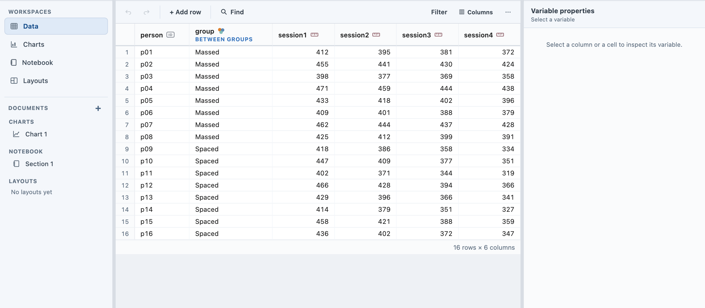
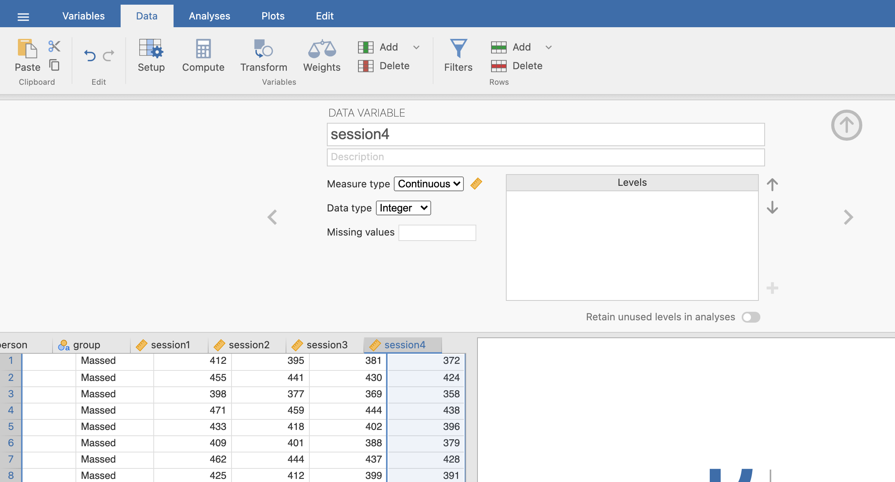
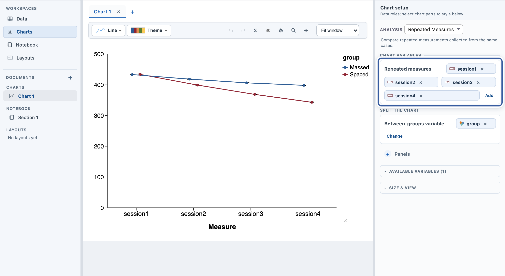
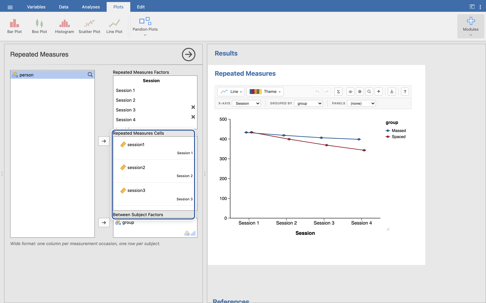
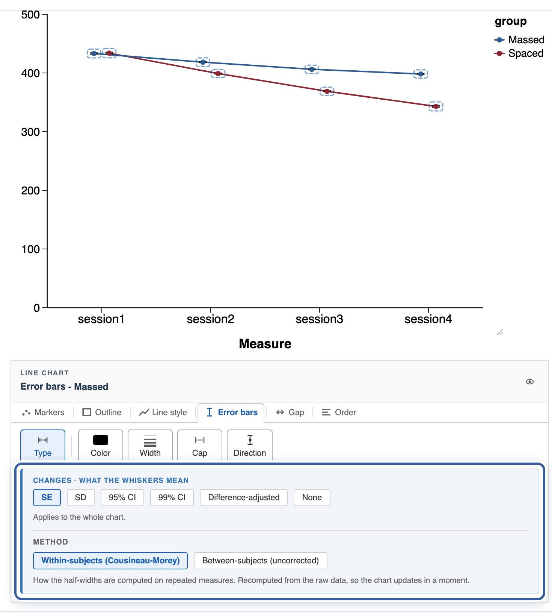
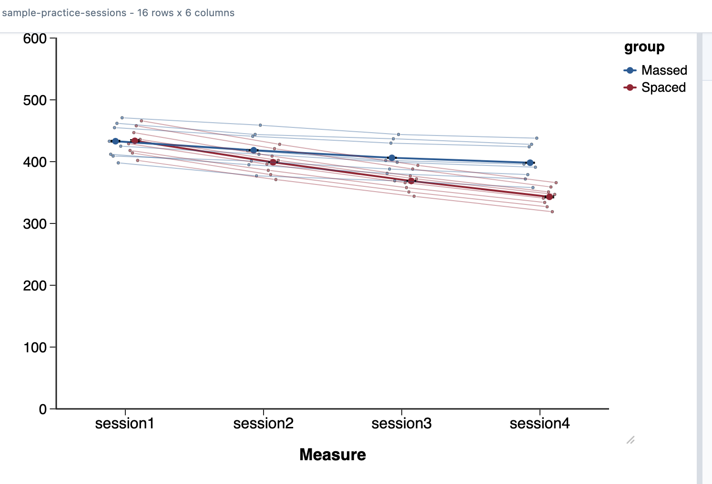

Pandion Plots
Pandion Plots
Learn · Repeated measures
Repeated measures, done right.
When the same people are measured more than once, the chart has to know which scores belong to the same person; that changes the layout of the data, the meaning of the error bars, and the tests. This guide uses the built-in Reaction time practice example: sixteen people timed on four practice sessions, in two training groups. The chart editor is the same everywhere; the toggle below adapts the data and setup steps to your platform.
1. The data shape: one row per person
Repeated-measures data goes in WIDE: one row per person, one column per occasion. The occasions are columns session1 through session4, not a single “session” column with a session-number code.

If your data is long instead (one row per measurement), pivot it wide before charting.

If your data is long instead (one row per measurement), pivot it wide before charting. And check that the session columns imported as Continuous: integer scores often arrive as Nominal, the measure-type fix from the getting-started guide.
2. Build the chart
Set Analysis to Repeated Measures. Drop the four session columns into Repeated measures (it takes as many as you have) and group into Between-groups variable.

On the Plots tab, choose Pandion Plots, then Repeated Measures. The options panel asks for the DESIGN: define one repeated-measures factor (name it Session and give it four levels), drop each session column into its cell under Repeated Measures Cells, and put group under Between Subject Factors.

3. Error bars that respect the design
On a repeated-measures chart the interesting variation is WITHIN each person: how their scores change across occasions. Ordinary error bars mix that up with how much people differ overall, and overstate the uncertainty of the changes.
So the default here is the within-subject correction (Cousineau-Morey): each person’s overall level is set aside, and the bars show how consistent the CHANGES are. Click any line marker, open the Error bars tab, and the Method control under the Type strip lets you switch between the corrected and the plain between-subjects bars.

4. See every person
Group means can hide individuals. The + menu’s Data points and Connect subjects overlays draw each person’s own trajectory behind the means.

5. Test it
The statistics follow the design automatically. A significance bracket between two occasions defaults to a paired test, because the module knows the same people sit at both occasions. The Σ Stats panel’s Omnibus tab runs the repeated-measures ANOVA (Greenhouse-Geisser corrected), and with a between-groups variable on the chart it becomes the full mixed ANOVA: group, occasion, and their interaction. The statistics guide covers reading and reporting all of it.
Next in the series: make it publication-ready, the finishing pass before a figure ships. All the guides live on the Learn page.